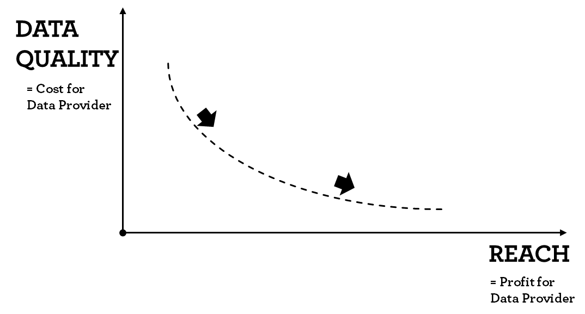

Chapter 6 Buying Targeting Data
In the last chapter, we discussed how data is gathered, processed and user interest/demograhics are predicted. The process depends on multiple elements:
- Tracking Technology - measuring user interactions across the web
- Prediction Technology - using machine learning to segment profiles and
- Auction Technology - buying ad slots for individual users.
To setup, run and combine these systems is costly, error-prone and time consuming. Hence, it is very common for advertisers to rely on third party data providers.
In most cases, the standard data buying from data providers is facilitated through the trading interface. Data providers list all their user segments (e.g. car insurance seeker, or demographic segments such as male 25-30). The list also includes the pricing for each segment. Usually, prices are on a cost per mille basis and range from 10 cents to 10$ per 1000 impressions. On the buy-side, the advertiser selects fitting segments from one or multiple data providers through an interface.
In the following paragraph, we focus on three major targeting data categories; demographic, interest and intent data. The first category is important as it is used to reach broadly defined target groups (e.g. male 20-49), which are commonly used in offline media. Interest data is often used as a well correlated proxy for long term buying probability or to match the advertising creative to the user interest. For example, interest in golf is highly correlated with high income, status-oriented clientele. Showing ads related to automotive, luxury watches or simply golf equipment seems like a good fit. Finally, intent data assumes that users go through a buying decision journey. Let’s take the example of a car insurance; a user might first read articles about car insurance in general and then go to comparison web sites and finally search for a specific insurance website. Such a user would be called “in-market” for and insurance. In theory, intent data selects users which have not yet bought a certain product and are still receptive to advertising in this category.
6.1 On intent data
While profiles in the first two targeting data categories are relatively stable over time. Intent data has a very obvious and relevant time aspect. Users join and leave this category on a constant basis. This is especially important as customer decision journeys are very heterogenous. They vary between product categories as well as between users. Some users are quick to decide while others research potential products for long time spans.
Data providers usually provide segments for individual product categories (e.g. car insurance). The users within the segment are binary labeled as “in-market” for the product category. The question arises when a data provider or the underlying algorithm decides that a user is “in-market” and when it decides that the same user fulfilled the buying intent. The following chart illustrates the process. A user starts with a base probability of buying a certain item or service.
Buying intent vs in-market categorization
She visits multiple websites to form an opinion about the available options. These visits are (partly) tracked by data providers. Hence, they identify an increase in buying probability and eventually label the user as “in-market”. Advertisers can now buy this user and show relevant ads. Here the first problem arises; inherently there is a time delay between the (first) user actions and the algorithms labeling as in-market. Depending on the algorithmic update rate and the data providers integrations with websites and buying systems these delays can be substantial (multiple days). Advertisers however would ideally show ads to users before they formed an opinion.
Let’s assume that the user has finally bought the product. Here the second problem arises. In most cases it is very unlikely that the data providers are able to track the sales. This is due to two reasons; a) still most sales happen offline even though the information phase happens primarily online. b) most ecommerce and corporate sites do not implement pixels from data providers in order not to leak information to competitors. Hence, data providers need arbitrary rules to remove the “in-market” label from users. As advertisers continue to advertise to users in the “in-market” segment, users are irritated by continuous advertisement of products they already have bought.
Questions advertisers need to ask about intent data:
- How long is the decision journey for my product?
- What is the variance in the decision journey length?
- Is advertising in the late stages of the decision journey sensible?
- When is a user labeled as “in-market”? (Which interactions are indicative?)
- How long does the data provider need to deliver the data from the indicative actions till the user is available in the buying system?
- How are users who bought the product removed from the system?
These questions might help to pick the right intent data provider. The following paragraphs detail further aspects.
6.2 Selecting data providers
When running an advertisement campaign, advertisers usually try to reach as many individuals of their target group as possible. As a response data providers and publishers routinely communicate their reach figures for key target groups (e.g. male 20-49 or young adults 18-30). These figures need to be taken with caution. In 2017 Facebook claimed that its platform allows advertisers to reach 1.7 million more 15- to 39-year-old users in Australia than the country’s official population.3
However, in order to decide which data providers to use as an advertiser, it is very illustrating to create the following chart. One the one axis we plot data provider’s reach figure, on the y-axis we plot the expected data quality for the attribute in question. Again, data quality refers to how correctly users are classified in terms of a certain attribute. The following example shows reach and data for demographic data. We expect platforms with login data (facebook and miles&more) to deliver a high share of impression within the target group. In contrast, publisher and other data provider need to rely on lookalike approaches and sequentially will have a certain share of impression delivered outside the target group.
Classifying data providers by reach and quality (Demographics)
This chart needs to be created for every target group criteria separately. If we look a data quality for intent data the picture changes. Google knows pretty well what people have researched in the past and are likely to buy in future, whereas facebook has limited insights into immediate buying intent.
Classifying data providers by reach and quality (Intent)
Mapping different data providers gives a good understanding of their potential.
6.2.1 Targeting data and competition
As we will discuss in the following paragraph evaluating data providers is very hard. For very common segments such as demographic or interest data advertisers need to consider two things when buying data; data accuracy and pricing.
In general, using data providers increases the cost to reach users. Data is sold to multiple advertisers at the same time. Currently, there is no way to see how many advertisers use the same data at a certain point of time. So, there are two cost elements to be taken into account; a) using the targeting data incurred a cost (cost per mille increase) b) as multiple advertisers try to reach the same user at the same time the bidding competition increases which drives up prices for the ad-space.
While the price for data is visible for the advertiser upfront the increase in competition and subsequently inventory prices (price for the ad space) is only measurable throughout the campaign.
As a consequence, when selecting data providers and their segments advertisers should strive to understand how often the data is used by other parties.
6.2.2 A crude metric to evaluate targeting data efficiency
Given one has approximated in target (data quality) figures for each data provider, one can calculate the efficiency gains. Here is a simplified example. Let’s assume we want to reach a female target group and we have some initial data quality metrics for three publishers. Also, we know their pricing for the impression (Cost per mille) and their targeting cost. Adding these two up brings us to the total CPM. Dividing the total CPM by the percentage on target (data quality) gives us the effective CPM.
| Publisher | % on target (data quality) | CPM - impression | CPM - targeting data | Total CPM | Effective CPM |
|---|---|---|---|---|---|
| A (no targeting) | 50% | 5 | 0 | 5 | 10.00 |
| B | 75% | 6 | 1 | 7 | 9.33 |
| C | 85% | 6 | 2 | 8 | 9.41 |
We can easily see that publisher B is the most effective with the lowest cost to reach the target group. As a guidance; the smaller the target group, the more important targeting data is. Note that effective CPM is a very crude measure. It basically assumes that impressions that do no reach the target group are basically worthless. This is very rarely the case. For jewelry the targeting might focus on a female audience, however reaching a male audience who might buy necklace for their partner is not worthless. In is important to keep in mind that buying audience/targeting data is a tool to improve marketing effectiveness. In itself it does transport the marketing message. In the trade-press and sales pitches the importance is of targeting data is often inflated.
6.2.3 The data provider dilemma
In the previous example we also see that targeting data is charged on a cost per mille basis. The more impressions/users are reached the higher the total revenue for the data provider. This inserts a problematic relationship for each data provider between data quality and reach. In general, improving data quality increases cost for the data provider in terms of technology, data integrations, better algorithms, better calibration etc. Providing more reach on the other hand increases the data provider’s profit. 
As a recap of the previous chapter, data providers have to set prediction threshold. The threshold describes which probability is enough to classify users in certain segments. Increasing the threshold increases the prediction accuracy. However, setting the threshold higher, reduces the number of users classified and the data provider’s reach. Subsequently, increasing reach without sacrificing quality is very costly or simply impossible.
6.3 Evaluating targeting data
After running advertising campaigns, the usual process requires marketeers to evaluate the campaign’s targeting in order to run the upcoming campaign more efficiently. Oftentimes the results are mixed and the root causes of the mixed results can only rarely be pinned to the data quality of individual providers. Given that the creative and messaging worked well, there are at least two aspects that are always interrelated: the idea or translation of the targeting and the data quality. While there are simple cases for which data is readily available (gender or age targeting), especially for niche campaigns there is no data provider offering the data or the reach is too limited. In these cases, marketeers work with proxy targeting approaches. They translate the original targeting with one for which data is available with enough reach. To give an example; for a tire campaign (a car tire for increased road security) the campaign might use a targeting on families with infants with the idea that fresh families have an increased desire for higher road safety. As both targeting settings “in-market for a car tire with high safety features” as well as “young families” might not be readily available, the marketeer uses the proxy “interest in baby buggies”. While it is easy to follow the reasoning and problem arises when evaluating the results. The following chart illustrates the trouble.
Root causes leading to mediocre results
The root cause cannot be identified. Hence in situations where the advertiser uses a proxy targeting the data quality cannot easily be observed. In cases where the advertiser does not use proxy targeting there two approaches to measure data quality. The following chart gives the overview.
Approaches to measure data quality
For awareness campaigns (using demographic or interest data) the most common approach is to use a measurement panel. Some users who have been exposed to a campaign are surveyed regarding their interest and demographic. Based on the survey data the marketeer can calculate the share of on target. There are two major drawbacks to this approach; a) it is costly to conduct b) the on-target measure can usually only be calculated for the whole campaign. So, if an advertiser uses multiple data providers their results will be pooled. The reason for that being that in order to run a panel approach to distinguish between require massive panel sizes.4
The second approach uses so-call performance metrics such as Cost per Conversion or Cost per Order. This approach is mostly used for businesses where users can perform the buying process (or a related action) on the advertiser’s website. The following chapter describes the pitfalls of the current process.
What advertisers need to consider when buying targeting data from third parties:
- How can data provider claims be validated before a campaign?
- What is the right process to evaluate and select data providers?
- How is targeting data quality measured during the campaign?
- How is the ROI of using targeting data quantified?
- Does it make sense to use the same data as your competition?